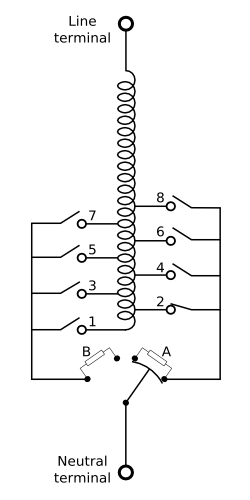

Counting tap changer operations¶
Author: Laurel Dunn
Date: October 19, 2020
This post steps through an exercise in exploratory analysis. Here, our objective is to mine voltage magnitude data for likely instances of tap changer operation. We’ll use statistical aggregates provided by
StatPointobjects to detect and count changes.
The main objective of this post is to illustrate exploratory analysis methods which users may apply similar methods to efficiently search of events of interest to them – in other words, the methods can be generalized for problems much more complex than tap changer operations!
What is a tap changer?¶
Tap changing is the process by which some transformers can adjust the voltage at the head of a distribution network by changing the coils ratio between their primary and secondary sides. Transformers with this capability are called load tap changers or LTCs. The power demand on a network rises and falls over the day, leading to an inverse rise and fall in the voltage drop along the network. LTCs compensate for this varying voltage drop by stepping the voltage at the head of the network up and down, to keep the voltage at the end of the network within permissible limits.
A tap changer is a mechanism embedded in many transformers that operates to keep the service voltage within reasonable bounds. As pictured below, tap changers use a mechanical switch to adjust the turns ratio between the primary and secondary windings on the transformer. These adjustments occur in response to changes in loading conditions on the distribution grid.

Exploratory Data Analysis¶
What to look for in the data¶
Tap change events are characterized by a stepwise increase or decrease in voltage magnitude, as in the first two events pictured below. These events can easily be detected visually, the challenge here is to develop an algorithm for detecting them computationally.

Putting this into code¶
Below, we query the database to return StatPoint objects reporting the min, mean, max, standard deviation and count of values in each 5-min interval in the data.
The result returns almost 200,000 rows of aggregates for 5-min windows spanning about 167 days (or about 18 months) of data.
dt = ns_delta(minutes=5)
pw = int(np.log2(dt))
df = pd.DataFrame([{'start': ns_to_datetime(p.time),
'end': ns_to_datetime(p.time+dt),
'count': p.count,
'min': p.min/base,
'max': p.max/base,
'mean': p.mean/base,
'stddev': p.stddev/base,}
for p, _ in streams[0].aligned_windows(start=start.time, end=end.time, pointwidth=pw)
]
)
df.head()
| start | end | count | min | max | mean | stddev | |
|---|---|---|---|---|---|---|---|
| 0 | 2015-07-27 23:56:02.363580+00:00 | 2015-07-28 00:01:02.363580+00:00 | 4468 | 1.003660 | 1.006479 | 1.005208 | 0.000464 |
| 1 | 2015-07-28 00:00:37.241487+00:00 | 2015-07-28 00:05:37.241487+00:00 | 32986 | 1.003439 | 1.007180 | 1.005566 | 0.000506 |
| 2 | 2015-07-28 00:05:12.119394+00:00 | 2015-07-28 00:10:12.119394+00:00 | 32985 | 1.003875 | 1.009009 | 1.007294 | 0.000839 |
| 3 | 2015-07-28 00:09:46.997301+00:00 | 2015-07-28 00:14:46.997301+00:00 | 32986 | 1.006113 | 1.009292 | 1.008276 | 0.000598 |
| 4 | 2015-07-28 00:14:21.875208+00:00 | 2015-07-28 00:19:21.875208+00:00 | 32985 | 1.006857 | 1.012520 | 1.010129 | 0.000926 |
print('total time:\t%i days'%((df['end'].max()-df['start'].min()).days))
print('window width:\t%.2f minutes'%(2**pw/1e9/60))
print('N windows:\t%i points'%(len(df)))
total time: 627 days
window width: 4.58 minutes
N windows: 184549 points
Statistical indicators of change¶
Above, we generated a dataframe df reporting statistical aggregates for each 5-min interval in the data. We can use these aggregates to help identify time intervals where a tap change may have occurred, and differentiate them from time intervals where they likely did not.
A tap change is characterized by three phenomena:
An abrupt and sustained change in voltage magnitude
A triggering event where the voltage is high (or low) relative to the nominal voltage
Below, we’ll use exploratory data analysis to examine each of these in the data.
What constitutes an “abrupt” change?¶
The change in magnitude within a given time interval is given as follows:
\(max(values) - min(values)\)
Below, we’ll plot a histogram showing this change for each interval in the data.
fig, ax = plt.subplots(figsize=(10,3))
ax.hist(df['max']-df['min'], bins=np.logspace(-3,-1, 300))
ax.vlines(0.004, *ax.get_ylim(), color='orange', lw=3)
ax.set_xlabel('Voltage Change (p.u.)')
ax.set_xscale('log')
plt.show()

Notice that the distribution is clearly bimodal. This means that changes in voltage magnitude follow characteristically different statistics at certain times than they do at others.
The center of mass for the distribution is clearly on the left side of the histogram. This suggests that most of the time, the voltage does not change very much in a 5-min interval.
The distribution also appeard to be left tailed. This means that there are some time intervals where the voltage changes considerably, but that these are relatively few and far between. The left tail could, for example, indicate that there are voltage sags in the data. Recall that the histogram shows the difference between the minimum and the maximum voltage, but does not tell us whether or not the change was short-lived (as in a voltage sag) or if it was sustained (as it would be during a tap change).
Interlude¶
Here’s a helper function for zooming in on one of the rows of aggregate data reported in the dataframe we used above.
Feel free to copy and paste this helper function to use in your own code!
def zoom_in(agg, values=False):
"""This helper function takes statitistcal aggregates (as stored in the df used above)
and uses the `start` and `end` time to query data at a more granular level.
"""
if values == True:
data = stream.values(agg['start'], agg['end'])
df = pd.DataFrame([(ns_to_datetime(p.time), p.value) for p, _ in data],
columns=['time','value'])
else:
old_pw = np.log2((agg['end'] - agg['start']).total_seconds()*1e9)
new_pw = pw-6
data = stream.aligned_windows(agg['start'], agg['end'],
pointwidth=new_pw)
df = pd.DataFrame([(ns_to_datetime(p.time), p.mean) for p, _ in data],
columns=['time','value'])
return df.set_index('time')['value']
Determining whether a change is sustained¶
Here, we’ll narrow in on the data to determine whether a change was short-lived, or if it was sustained. The two figures below illustrate this difference by comparing a voltage sag with a possible tap change.
Note: These two intervals were cherry picked via trial and error (not shown here!)
example1 = zoom_in(df.loc[20390], values=True)
example2 = zoom_in(df.loc[122695], values=True)
example3 = zoom_in(df.loc[109050], values=True)
fig, ax = plt.subplots(ncols=3, figsize=(15,2))
(example1/base).plot(ax=ax[0])
(example2/base).plot(ax=ax[1])
(example3/base).plot(ax=ax[2])
plt.show()